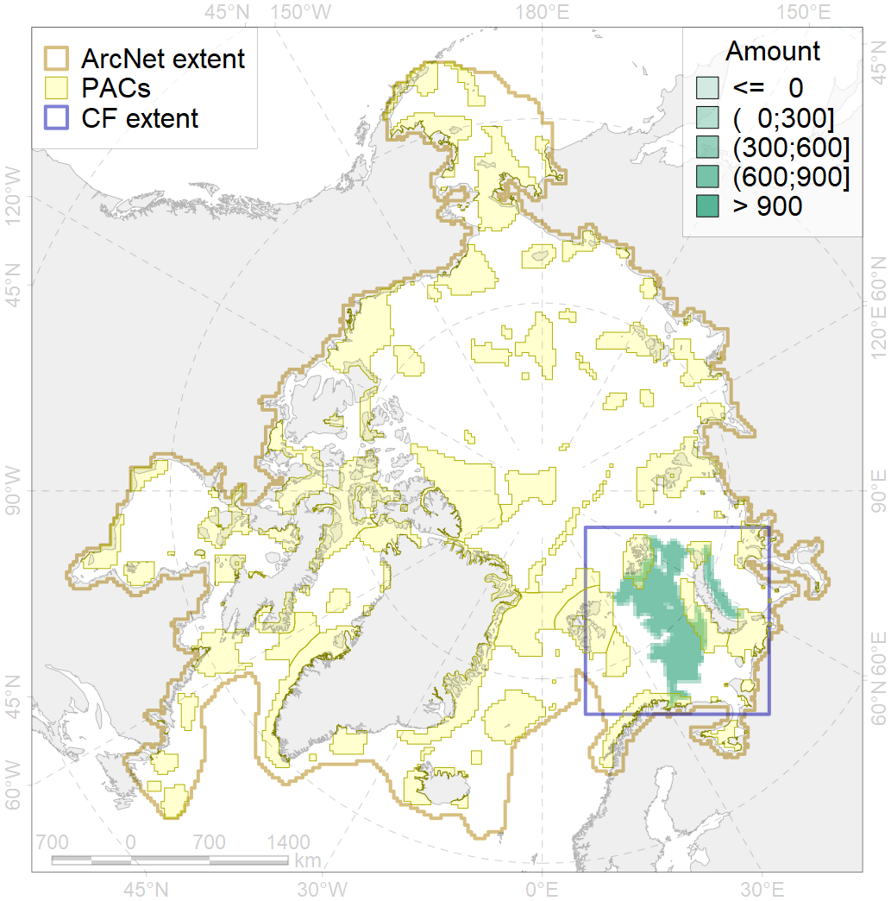
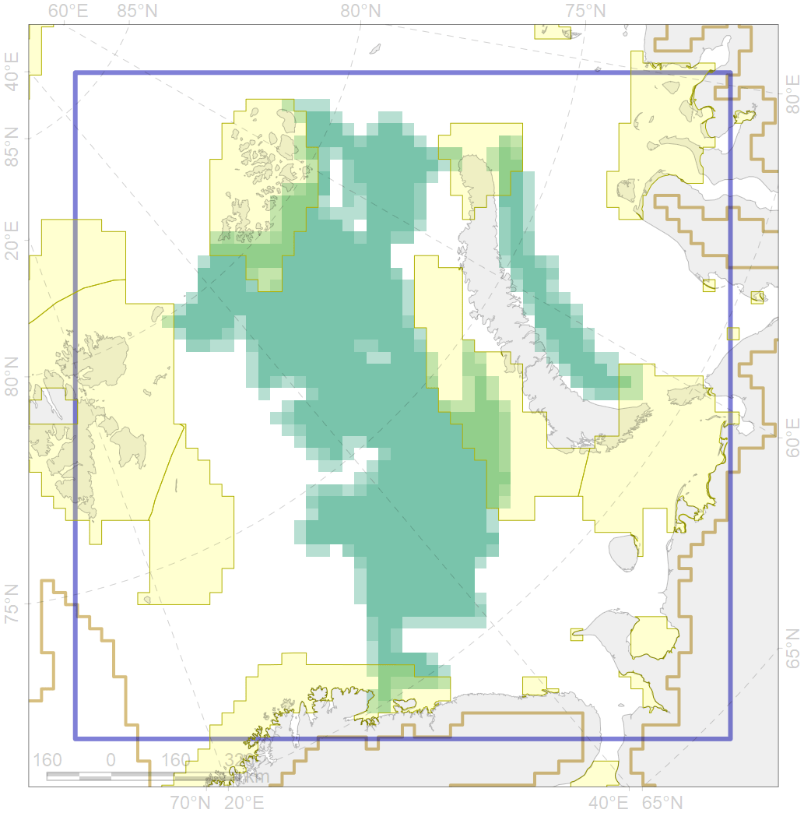

7265

| CF code | 7265 |
| CF name | Barents and Kara Sea Throughs |
| Time Period | At least last 100 years |
| Source(s) | Harris et al., 2014 |
| Seasonality | 1-12 |
| Depth Horizon | Sea floor and water column above |
| Methodology | Data obtained from the literature |
| Use Restrictions | Open source |
| Author Name | V. Spiridonov |
| Notes | |
| Scenario’s Target | 0.042 |
| Target Achievement | 0.121 (Scenario: 288.3%) |
| PAC | Share of the Total Amount within the PAC | Share of the Target Achievement for the ArcNet | PAC’s Contribution to the Target Achievement |
|---|---|---|---|
| 19 | 1.1% | 20.4% | 7.1% |
| 20 | 0.3% | 5.6% | 1.9% |
| 21 | 4.8% | 91.4% | 31.7% |
| 22 | 4.3% | 92.2% | 32.0% |
| 27 | 1.2%1.6% | 25.2%27.0% | 8.8%9.4% |
| 30 | 0.0% | 0.3% | 0.1% |
| inner | 11.8%12.2% | 235.2%236.9% | 81.6%82.2% |
| outer | 88.2%88.3% | 53.1%54.5% | 18.4%18.9% |
| † supplement values are for area consistence whereas principal values are for Accenter compatible gridded stats |